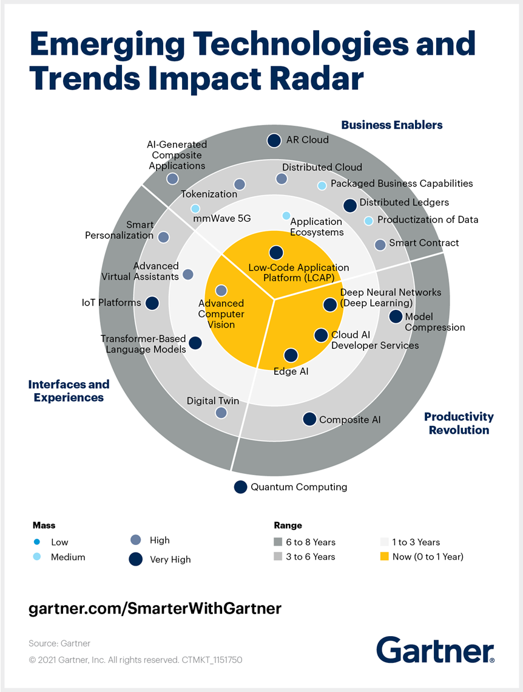

Artículo 6 Tendencias tecnológicas 2021
6.1 Resumen
Los asistentes virtuales han estado presentes entre nosotros; sin embargo, aún no se ha explotado lo suficiente este campo. Durante estos años se tienen nuevas tecnologías de asistencia virtual más avanzadas, pues son capaces de ejercer como agentes de facturación virtual o agentes virtuales de inteligencia artificial o realidad virtual; hasta pueden llegar a ser asistentes en automóviles autónomos.
6.2 Abstract
Virtual assistants have been present among us; however, this field has not yet been exploited enough, during these years, there are new more advanced virtual assistance technologies to come, then, they are capable of acting as virtual billing agents, virtual agents of artificial intelligence or virtual reality can even become assistants in autonomous cars.
6.4 Introducción
Se mostrarán y evaluarán las tendencias que según Gartner, citado por Jordan (2021) seguirán utilizándose las tecnologías que han estado emergiendo desde el 2010 hasta la fecha; se evaluará la razón del porqué siguen dichas tendencias y el entorno en el cual estas se han estado desarrollando y cuál es la influencia que ejercen sobre las tecnologías. Se observará que, debido a la situación actual, las tecnologías que están sobresaliendo son aquellas que involucran al distanciamiento, pues el mismo es necesario para preservar la salud de los habitantes y, por ende, tecnologías que involucran automatización de procesos.
6.5 Artículo
La Inteligencia artificial IA, realidad extendida RV y el despliegue masivo de la red 5G son las principales tendencias (Rodríguez, 2021).

Los asistentes virtuales han estado presentes en nuestro medio, sin embargo, aún no se ha explotado lo suficiente este campo. Durante estos años, nuevas tecnologías de asistencia virtual más avanzados están por venir, pues son capaces de funcionar como agentes virtuales de inteligencia artificial, de facturación virtual o de realidad virtual; hasta pueden llegar a ser asistentes en automóviles autónomos (Jordan, 2021).
Gartner (2021) muestra las 23 tecnologías más impactantes en su Radar de Impacto de Tendencias y Tecnologías, dando a conocer, además de los asistentes virtuales, otras tecnologías en dicho radar. Las tecnologías de este radar se pueden
Interfaces y experiencias: son aquellas tecnologías que están cambiando el modo en que se interactúa con nuestro alrededor.
Habilitadores empresariales: son aquellas tecnologías que cambian el modo en que operan las empresas, siendo estos los cambios prácticos, procesos, métodos, modelos o funciones.
Revolución de la productividad: la unión de múltiples tecnologías y tendencias que ayudan a organizaciones a operar de manera más eficiente para resolver problemas que estas tengan (Nguyen, 2021).
IA
Por medio de la IA los teléfonos celulares incorporan funciones como reconocimiento facial y sensores biométricos. Por ejemplo, un bot presente en la interacción de una entidad pública y los ciudadanos será capaz de identificar cuál es el trámite que se quiere llevar a cabo (pago de una multa). En el área de ciberseguridad, permitirán detectar múltiples tipos de ataques y detenerlos sin intervención humana. Gracias a la IA se podrían identificar patrones de forma automática para localizar al atacante. También hay riesgos, porque la IA permite adaptar un sistema de acuerdo con el comportamiento de cada usuario. TikTok, Instagram y Netflix aplican algoritmos para analizar el comportamiento de los usuarios.
Realidad extendida
La realidad extendida se refiere a una tecnología que permite al usuario experimentar y manipular objetos virtuales a través de interacciones hombre-máquina, gracias a wearables que permiten a la persona realizar acciones con simples gestos.
Red 5G
Se está a la expectativa de que empiece a probarse el Red 5G en Europa, Norteamérica, Asia Oriental y otras regiones desarrolladas. Los estándares serán la banda de 700 MHz con mejor cobertura y 26 GHz que ofrece grandes velocidades y latencias bajas. La pandemia ha afectado notablemente el despliegue de redes 5G. Sin embargo, ya se han sacado al mercado dispositivos inteligentes que utilizan esta tecnología.
Asistentes virtuales avanzados
Los asistentes virtuales avanzados o AAV por sus siglas o también llamados agentes conversacionales de IA, procesan las entradas humanas para entregar predicciones y decisiones. Están impulsados por una combinación de interfaz de usuario conversacional, proceso de lenguaje natural PNL y técnicas semánticas y de aprendizaje como redes neuronales profundas DNN. Esta tecnología se estima que tiene un tiempo de comercialización: de 1 a 3 años.
Transformer-Based Language Models
Modelo de lenguaje basado en transformadores: son redes neuronales profundas DNN que procesan palabras como secuencias en una oración. Esta tecnología también mejora la traducción, transcripción y generación de lenguaje natural, estando entrenados en enormes conjuntos de datos de miles de millones de frases. Esta tecnología también estima un tiempo de comercialización de 1 a 3 años. Capacidades empresariales empaquetadas: permiten a las organizaciones crear experiencias personalizadas compuestas a partir de componentes de aplicaciones que compran o crean. Para admitir el negocio componible los proveedores de tecnología deben ofrecer capacidades empresariales empaquetadas que representen un conjunto bien definido de características empresariales que sean reconocibles como tales por un usuario empresarial. Esta tecnología estima un tiempo de comercialización de 3 a 6 años.
Nube de AR
Es la nube de realidad aumentada que permite la unificación de mundos físicos y digitales mediante la entrega de contenido digital persistente, colaborativo y contextual superpuesto en personas, objetos y ubicaciones, para proporcionar a las personas información y servicios directamente vinculados con todos los aspectos de su entorno físico. Esta tecnología tiene un tiempo de comercialización de 6 a 8 años.
6.6 Conclusiones
Los avances tecnológicos seguirán con la tendencia que ha estado teniendo la inteligencia artificial; la realidad extendida y el despliegue de la red 5G se encuentran entre las principales tendencias. Se estima que muy pronto los asistentes virtuales tendrán más protagonismo. En el área de ciberseguridad, los algoritmos permitirán detectar múltiples tipos de ataques y detenerlos sin intervención humana.
Discusión de resultados
Antes de darse la problemática de la pandemia, según Gartner, citado por Jordan (2021), las tecnologías que estaban en tendencia eran muchas, pero, con la actual modalidad de trabajo maduraron sobre otras tecnologías aquellas que ayudan a la población a laborar alejados de las demás personas o en un ambiente abierto diferente a como solía ser normal.
6.7 Recomendaciones
El estudio sobre el conocimiento de las tendencias tecnológicas es para aquellas empresas que desean un cambio frente a las situaciones de cambio de su cliente y también para aquellas personas con negocio pequeño o emprendedores, para empezar con las tecnologías que permitan sobrellevar la situación del mercado actual.
6.8 Referencias
[1] [Jordan, B. (2021)][5 Emerging Technologies Explained by Gartner Experts]. Recuperado de: https://acortar.link/jHo8Aq. [Último acceso: 30 de octubre de 2022].
[2] [Nguyen, T. (2021). ][4 Impactful Technologies from the Gartner Emerging Technologies and Trends Impact Radar for 2021]. Recuperado de: https://acortar.link/MZOU3i. [Último acceso: 30 de octubre de 2022].
[3] [Rodríguez, A. (2021)][El 2021 promete tres hitos tecnológicos. El Comercio. Consultado el 3 de marzo de 2021]. Recuperado de: https://acortar.link/TUnoBC. [Último acceso: 30 de octubre de 2022].